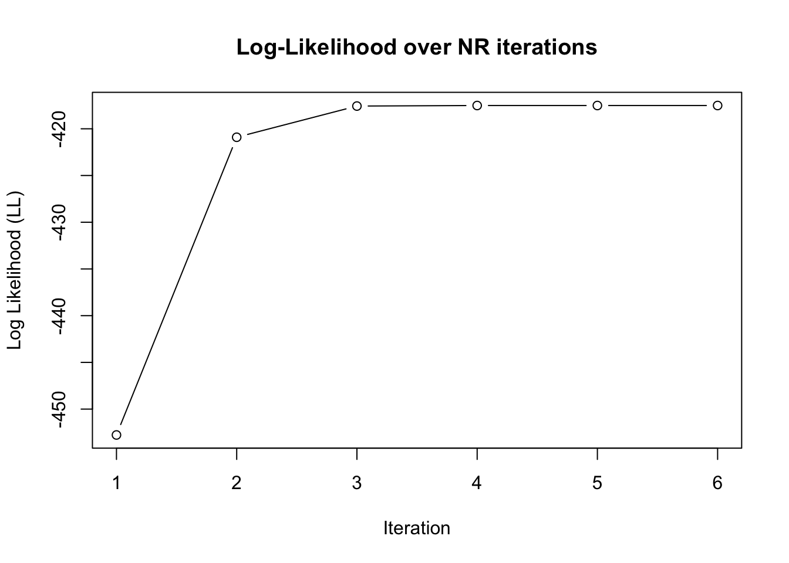
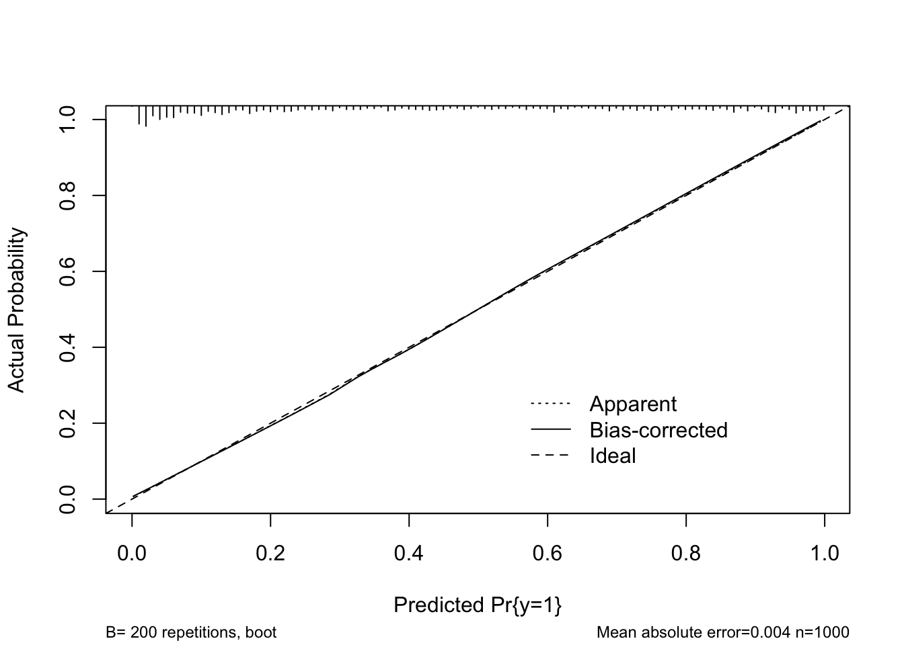

Here I explore some topics in logistic regression manually, including techniques in estimation, uncertainty and validation. I’ll generate a simulated dataset by way of illustration.
2. Simulated Data
Create simple dataset from the logic model with one predictor
However, this has no closed-form solution, so numerical methods are used to estimate \(\beta_j\), e.g. Newton-Raphson. For this, we first need to derive the Score Function and the Hessian.
4. Gradient
To find the maxima, we firstly need to know how the log likelihood function varies w.r.t its \(\beta\) parameters This is just its first derivative, called the Score Function:
This derivative of the logistic function follows when we notice that the direct derivative of \(\pi_i\) is equivalent to the result of multiplying it by \((1-\pi_i)\):
We can now represent the score function in code for our simulated dataset:
compute_score <-function(beta0, beta1, data) { x <- data$x y <- data$y eta <- beta0 + beta1 * x pi <-1/ (1+exp(-eta)) residual <- y - pi score_0 <-sum(residual) score_1 <-sum(residual * x)c(score_0, score_1)}compute_score(beta0 =-0.5, beta1 =2, data = sim_data)
[1] -12.47272 14.12208
# Compare to GLM Hessianlibrary(numDeriv)mod <-glm(y ~ x, family ="binomial", data = sim_data)LL <-function(beta, X, y) { eta <- X %*% beta p <-1/ (1+exp(-eta))sum(y *log(p) + (1- y) *log(1- p))}X <-model.matrix(mod)y <- mod$yest <-coef(mod)score_vec <-grad(LL, est, X = X, y = y)hessian_mat <-hessian(LL, est, X = X, y = y)print(score_vec)
[1] -7.830443e-08 2.275174e-07
5. The Hessian
To understand the curvature of the log-likelihood function near its stationary points, we need need the second derivatives.
In arbitrary parameters, Hessian matrix is expressed in matrix form
\[
\mathbf{H}(\boldsymbol{\beta}) = \frac{\partial^2 \ell}{\partial \boldsymbol{\beta} \partial \boldsymbol{\beta}^\top}
= - \mathbf{X}^\top \mathbf{W} \mathbf{X}
\] where \(W\) is diagonal with elements \(p_i(1 - p_i)\).
We can now represent the Hessian in code:
compute_hessian <-function(beta0, beta1, data) { x <- data$x y <- data$y n <-length(x) eta <- beta0 + beta1 * x pi <-1/ (1+exp(-eta)) w <- pi * (1- pi) # weights H <-matrix(0, nrow =2, ncol =2)for (i in1:n) { xi_vec <-c(1, x[i]) outer_prod <-tcrossprod(xi_vec) H <- H + w[i] * outer_prod }return(-H)}compute_hessian(beta0 =-0.5, beta1 =2, sim_data)
The determinant \(\det(H)\) here is positive, meaning that we have a maximum or a minimum. The negative sign on entry \((1,1)\) indicates a maximum.
Comparison with the GLM() output reveals similarity with the manually calculated values, but not exact equality. Would we expect an exact match?
6. Newton-Raphson Algorithm
We are interested in solving for the values of \(\boldsymbol{\beta}\) that maximise the (log-)likelihood function. Numerically, we shall invoke an iterative procedure with iteration step
\[
\boldsymbol{\beta_{t+1}} = \boldsymbol{\beta_t} - \boldsymbol{H^{-1}} \boldsymbol{U}
\] where U is the score vector (Jacobian) and H is the Hessian.
R implementation:
# LL = log-likelihoodLL <-function(beta, x, y) { eta <- beta[1] + beta[2] * x pi <-1/ (1+exp(-eta))sum(y *log(pi) + (1- y) *log(1- pi))}
NR <-function(data, beta_init =c(0, 0), max_iter =100, tol =1e-6) { beta <- beta_init x <- data$x y <- data$y LL_vals <-numeric()for (iter in1:max_iter) { eta <- beta[1] + beta[2] * x pi <-1/ (1+exp(-eta)) residual <- y - pi score <-c(sum(residual), sum(residual * x)) H <-compute_hessian(beta[1], beta[2], data) delta <-solve(H, score) beta_new <- beta - delta LL_vals[iter] <-LL(beta_new, x, y)# Euclidean loss functionif (sqrt(sum((beta_new - beta)^2)) < tol) {#message(sprintf("Converged in %d iterations.", iter))break } beta <- beta_new }return(list(beta = beta, H = H, LL = LL_vals))}
out <-NR(sim_data)plot(out$LL, type ="b" , main ="Log-Likelihood over NR iterations", xlab ="Iteration", ylab ="Log Likelihood (LL)")

out <-NR(sim_data)beta_hat <- out$betaH <- out$Hprint(beta_hat)
The diagonal elements give \(\operatorname{Var}(\hat{\beta}_0)\) and \(\operatorname{Var}(\hat{\beta}_1)\), respectively. Taking square roots gives their standard errors.
The results are consistent with the above, but the CIs only just include the true values. Unclear whether this is due to a programming error, insufficient sample size, or something else.
9. Bootstrap Validation
Repeated sampling with replacement to estimate standard errors.
Bootstrap in R:
library(pROC)bootstrap_validate_auc <-function(data, B =200) { n <-nrow(data) x <- data$x y <- data$y optimism <-numeric(B)for (b in1:B) { idx <-sample(1:n, size = n, replace =TRUE) data_boot <- data[idx, ] fit_boot <-NR(data_boot) beta_boot <- fit_boot$beta x_boot <- data_boot$x y_boot <- data_boot$y eta_boot <- beta_boot[1] + beta_boot[2] * x_boot p_boot <-1/ (1+exp(-eta_boot)) auc_boot <-auc(y_boot, p_boot, quiet =TRUE) # suppressMessages removed# AUC on original data eta_test <- beta_boot[1] + beta_boot[2] * x p_test <-1/ (1+exp(-eta_test)) auc_test <-auc(y, p_test, quiet =TRUE) optimism[b] <- auc_boot - auc_test } avg_optimism <-mean(optimism)# Fit model on full data final_fit <-NR(data) beta_final <- final_fit$beta eta_final <- beta_final[1] + beta_final[2] * x p_final <-1/ (1+exp(-eta_final)) auc_app_final <-auc(y, p_final, quiet =TRUE) validated_auc <- auc_app_final - avg_optimismreturn(list(apparent =as.numeric(auc_app_final),optimism = avg_optimism,validated = validated_auc ) )}
This is a tiny bit higher than our manually calculated C-statistic, but nevertheless very close.
We can visualise calibration also:
cal <-calibrate(fit, method ="boot", B =200)plot(cal)

n=1000 Mean absolute error=0.004 Mean squared error=2e-05
0.9 Quantile of absolute error=0.007
While the fit()-reported C-statistic seems to comport well with the manually bootstrapped result, the validate() method doesn’t report optimism in this directly – only on Dxy. This is because Harrell believes rank-correlation theory is a better grounding for discrimination. The two are related, however, by:
Arguably, this accounts well for the problem with very low AUC values: an AUC of 0.1 is as surprising as an AUC of 0.9 in some way; even though the model does not predict correctly, it fails to do so in a systematic way. If what we seek to avoid is the absence of systematicity, where AUC=0.5, then Somers’ D is probably preferable.
10. Cross-validation
Lastly, we can validate by partitioning our data into \(K\) folds, train/test each fold and measure average performance.
5-fold CV in R:
cross_validate <-function(data, K =5, metric ="auc") { n <-nrow(data) partition <-sample(rep(1:K, length.out = n)) perf <-numeric(K)for (k in1:K) { train <- data[partition != k, ] test <- data[partition == k, ] model <-glm(y ~ x, data = train, family = binomial) p <-predict(model, newdata = test) y <- test$y perf[k] <-suppressMessages(auc(y, p)) }list(per_fold = perf, mean =mean(perf))}
cv_auc <-cross_validate(sim_data, K =5, metric ="auc")round(cv_auc$mean, 4)